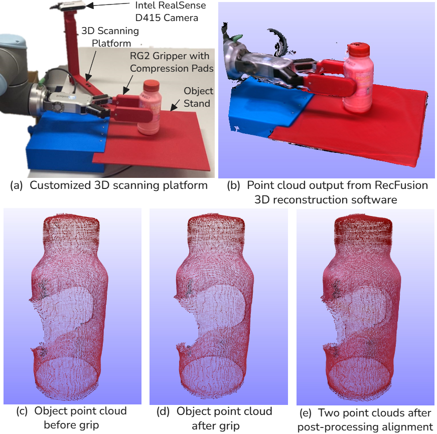
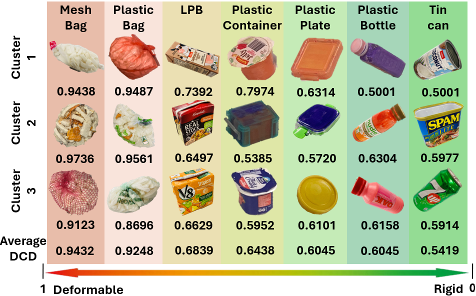

Object Deformability Score Calculation
This page documents the experimental and computational methodology used to calculate the Object Deformability Score (QO) for the 21 objects included in the GRAB benchmark. The methodology integrates controlled object compression, 3D reconstruction, point-cloud preprocessing, geometric registration, and Density-Aware Chamfer Distance (DCD) to quantify deformation. The complete procedure encompasses the acquisition of undeformed and compressed object geometries, preparation and alignment of the corresponding point clouds, and calculation of a quantitative deformability score. Experimental illustrations and processing demonstrations accompany the methodological descriptions.
Methodology Overview
Object deformability is quantified through six sequential processing stages, from controlled compression to the calculation of the final object-level score.
Controlled Compression
Application of a 40 N compression force independently along the x and y axes.
3D Reconstruction
Acquisition of object geometry before and during compression using RecFusion.
Point-Cloud Conversion
Export of reconstructed meshes and preparation of binary-format point clouds.
Preprocessing
Removal of background geometry and unrelated points through spatial and colour-based filtering.
Point-Cloud Alignment
Coarse registration using MeshLab followed by fine alignment using ICP.
DCD Calculation
Geometric comparison of aligned point clouds and aggregation of directional deformation measurements.
Object Deformability as a Graspability Attribute
In the GRAB benchmark, the Object Deformability Score (QO) represents an object-related pre-grasp attribute that characterises deformation under an applied force. The dataset comprises 21 objects across seven inorganic contaminant categories, with three representative objects per category. All objects weigh less than 100 g and fit within a bounding volume of 20 × 10 × 10 cm³, satisfying the operational constraints of the evaluated grippers. The dataset encompasses objects with diverse geometric and deformation characteristics. As object mass and dimensions were constrained, deformability was selected as the principal object-related property for graspability evaluation. The property is quantified by comparing 3D representations acquired before and during controlled compression, using DCD as the geometric discrepancy measure.
Experimental Setup for Deformation Measurement
A customised experimental platform was developed to measure changes in object geometry under controlled compression. The platform comprises a UR10 robotic manipulator equipped with an OnRobot RG2 parallel gripper and customised compression pads. An Intel RealSense D415 RGB-D camera and RecFusion 3D reconstruction software are employed to acquire the object geometry. A compression force of 40 N is applied independently along the x and y axes. Measurements along both directions account for directional variations in object deformation and provide a consistent basis for comparative evaluation.

Controlled Compression Procedure
For each object, the undeformed geometry is initially acquired before applying the compression force. The object is then compressed using the robotic gripper, and its geometry is reconstructed under the applied load. This procedure is conducted independently along the x and y directions. Each directional experiment produces a pair of 3D representations corresponding to the undeformed and compressed states. These paired representations constitute the input data for subsequent geometric analysis.
3D Reconstruction and Point-Cloud Acquisition
The undeformed and compressed object geometries are reconstructed using RecFusion from RGB-D measurements acquired by the RealSense camera. Depth measurements are projected into three-dimensional space using the camera intrinsic parameters. Successive observations are registered and integrated through Truncated Signed Distance Function (TSDF) fusion, generating a reconstructed representation of the object surface.
Object Geometry Reconstruction
Separate 3D reconstructions are acquired for the undeformed and compressed states. The resulting geometries capture the physical changes induced by the applied compression force.
Mesh Export
The reconstructed geometries are exported as 3D mesh files. Separate mesh datasets are retained for the two compression states to support independent preprocessing and subsequent geometric comparison.
ASCII-to-Binary Conversion
The exported ASCII-formatted geometry data are converted into binary format for subsequent point-cloud processing. This conversion is performed using binary_ascii.py, provided in the associated repository.
3D Reconstruction Before and During Compression
The reconstruction results are illustrated through the original RecFusion meshes and their corresponding binary-format point-cloud representations for the undeformed and compressed object states.
Before Compression
(a) RecFusion 3D Mesh
Reconstructed object geometry before compression.
(b) Binary Point-Cloud Representation
Corresponding binary-format point-cloud representation of the undeformed object.
During Compression
(c) RecFusion 3D Mesh
Reconstructed object geometry under the applied compression force.
(d) Binary Point-Cloud Representation
Corresponding binary-format point-cloud representation of the compressed object.
The reconstructed 3D meshes for all 21 objects are provided in the object_meshes folder of the associated GitHub repository.
Point-Cloud Preprocessing and Alignment
The reconstructed point clouds may contain background geometry, gripper components, and other points unrelated to the target object. These points are removed before registration to ensure that the subsequent DCD measurement primarily reflects differences in object geometry.
Point-Cloud Filtering
Spatial cropping and colour-based thresholding are applied using RecFusion and MeshLab to isolate the target object. The associated repository includes color_filter.py for colour-based point-cloud filtering.
Following preprocessing, the undeformed and compressed point clouds are registered within a common coordinate frame. Registration is essential because differences in object position or orientation could otherwise contribute to the measured geometric discrepancy. A two-stage registration procedure, comprising coarse alignment and fine ICP registration, is employed.
Coarse Alignment Using MeshLab
Initial alignment is performed using MeshLab by approximately aligning the principal axes of the two point clouds. This reduces differences in orientation and translation and establishes an initial correspondence for fine registration.
Fine Alignment Using ICP
The Iterative Closest Point (ICP) algorithm is subsequently applied to refine the alignment. ICP iteratively estimates point correspondences and a rigid transformation that minimises residual geometric distances between the two point clouds. This procedure reduces discrepancies associated with acquisition pose while retaining non-rigid geometric differences arising from compression. The implementation is provided in icp_alignment.py.
Point-Cloud Registration After ICP Alignment
ICP Alignment Result. Superimposed point clouds representing the undeformed and compressed object geometries after registration.
The resulting registered point clouds represent the same object under two compression states within a common coordinate frame. These datasets form the input to the DCD calculation.
Object Deformability Score Calculation
Density-Aware Chamfer Distance (DCD) is employed to calculate the Object Deformability Score (QO) by quantifying the geometric discrepancy between the undeformed and compressed object geometries. The metric incorporates nearest-neighbour distances and density-aware normalisation to account for variations in point sampling. Let \(S_1\) denote the point cloud representing the undeformed object and \(S_2\) denote the corresponding point cloud under compression. The DCD between these point clouds is formulated as follows:
Notation
\(S_1\): Point cloud acquired before compression.
\(S_2\): Point cloud acquired during compression.
\(\hat{y}\) and \(\hat{x}\): Nearest-neighbour points identified in the opposite point cloud.
\(\|x-\hat{y}\|_2\): Euclidean distance between a point and its nearest neighbour.
\(\hat{n}_y\) and \(\hat{n}_x\): Density-normalisation factors associated with the corresponding nearest-neighbour points.
\(\alpha\): Parameter controlling the sensitivity of the exponential distance term to geometric discrepancies.
The DCD formulation evaluates geometric discrepancies bidirectionally. For each point in \(S_1\), the nearest point in \(S_2\) is identified, and the corresponding distance and density contributions are calculated. The same operation is performed from \(S_2\) to \(S_1\), and the two contributions are averaged. The exponential distance term incorporates the magnitude of geometric differences, while the density-aware factors account for variations in local point distribution. Smaller geometric discrepancies generally yield lower DCD values, whereas larger discrepancies yield higher values. Under the standardised compression conditions, DCD therefore provides a quantitative indicator of relative object deformation.
Calculation of the Final Object Deformability Score
Object deformation may vary with the direction of the applied force. Accordingly, DCD is calculated independently for the x-axis and y-axis compression experiments. Each directional measurement compares the registered undeformed and compressed point clouds. The final Object Deformability Score (QO) is obtained by averaging the two directional DCD values:
Here, \(d_{\mathrm{DCD}}^{(x)}\) and \(d_{\mathrm{DCD}}^{(y)}\) denote the DCD values obtained from compression along the x and y axes, respectively. Their arithmetic mean represents the object-level deformability score. The same measurement and processing procedure is applied to all 21 objects, yielding one deformability score per object. These scores enable comparative analysis across individual objects and contaminant categories.
Object Deformability Score Results
The DCD-based methodology was applied to 21 objects across seven inorganic contaminant categories. The resulting object-level scores characterise differences in geometric deformation under the standardised compression conditions. The results indicate substantial variation across the investigated categories. Mesh bags and plastic bags exhibit the highest average deformability scores, whereas tin cans exhibit the lowest category-average score.
